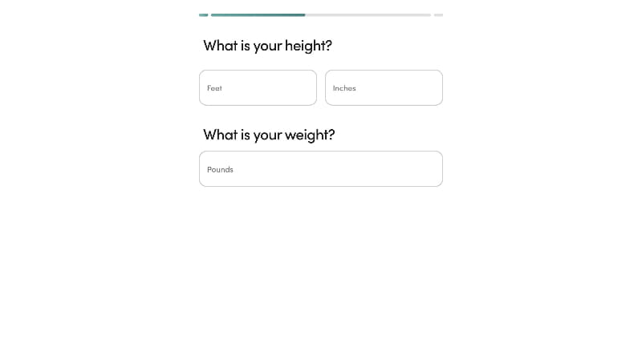
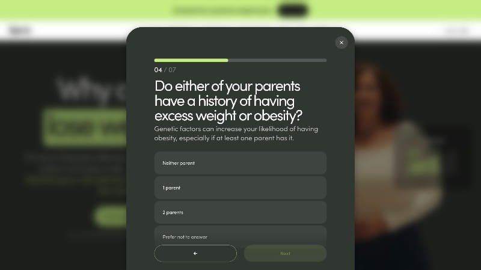
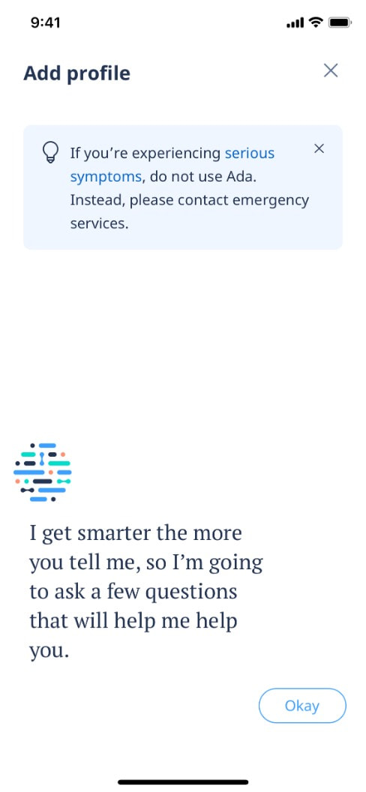
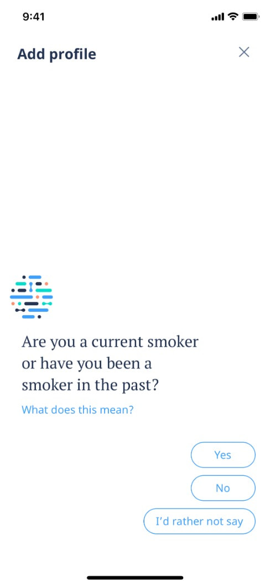
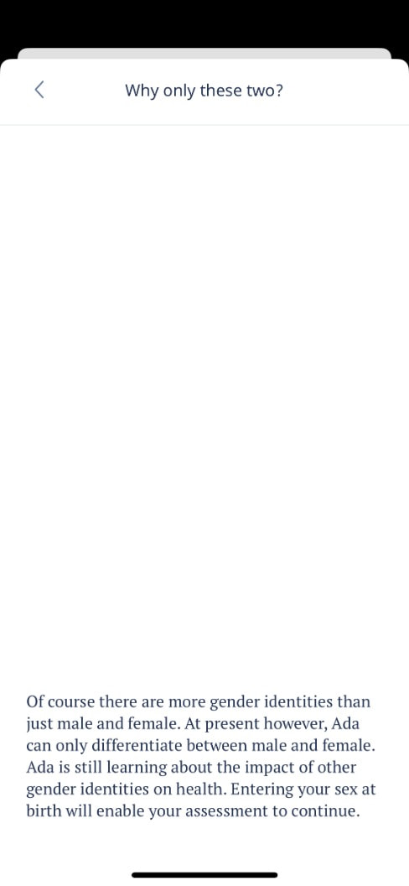
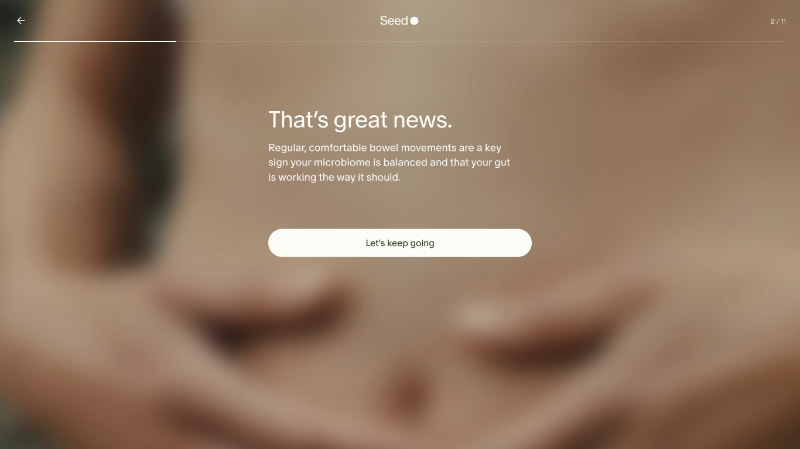
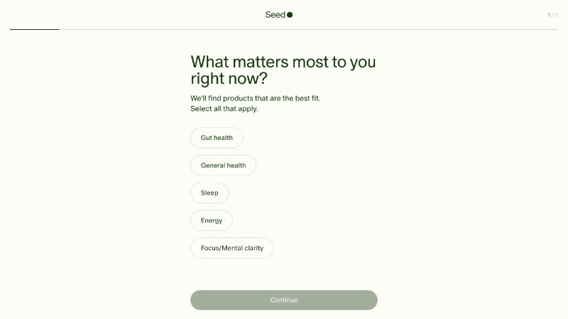
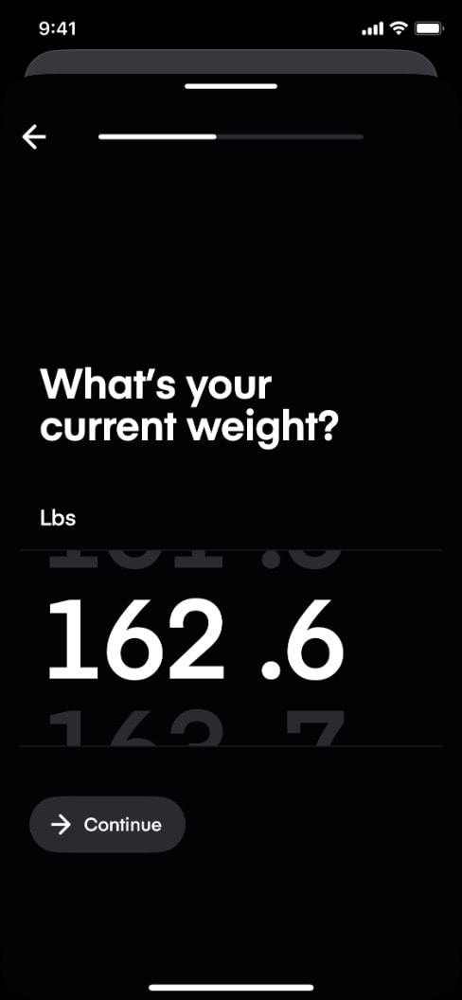

Refero research: health intake quiz question screens
Source: Refero MCP only (screens, flows, styles). ~11 calls, page 1. Thumbnails in img/refero-intake/, all viewed before judging.
Closest competitor match in Refero: Hers weight-management intake (US GLP-1 telehealth). Ada (symptom checker) is the best reference for medical tone.
Patterns
1. Height and weight on one calm screen (Hers)
- What: One screen with two stacked questions: "What is your height?" (feet + inches side by side) and "What is your weight?" (one field). Thin segmented progress bar on top, lots of white space, unit shown as the placeholder.
- Why it works: BMI needs both numbers, so asking them together reads as one fact about you, not two interrogations. Cuts one step from the riskiest part of the funnel.
- CompanyX: Put height (cm) and weight (kg) on one screen with
inputmode="numeric"and the unit inside the field. This conflicts with notes.md ("weight on its own screen"). One way to settle it: keep them together but put the reassurance line right under the weight field. Pick one and record why.
- https://refero.design/pages/432451eb-9642-46c4-9f4b-6375b6c02b22
2. A "why we ask" line under the question (Hers)
- What: Dark modal quiz, "04 / 07" counter plus a bar. The question "Do either of your parents have a history of excess weight or obesity?" has a one-line sub-copy that explains it: "Genetic factors can increase your likelihood…". It also offers "Prefer not to answer."
- Why it works: Sensitive questions feel clinical and fair when the reason sits right under them. An opt-out answer stops people quitting on one uncomfortable question.
- CompanyX: Every sensitive question (weight, conditions, medication, pregnancy) gets a muted 1-line "why" under the title, for example "Vikt och längd ger ditt BMI, som avgör om behandling kan vara aktuell." Add "Vill inte svara" only where the clinic can still screen without the answer, never on BMI inputs.

- https://refero.design/pages/11fc1d71-63dd-4ea2-a397-0ce98bbd9287
3. Safety disclaimer up front, then a warm "I'll ask a few questions" (Ada)
- What: Before question 1 there is a soft-blue dismissible note: "If you're experiencing serious symptoms, do not use Ada. Instead, contact emergency services." Below it, in a large serif: "I get smarter the more you tell me, so I'm going to ask a few questions that will help me help you." Then an "Okay" pill.
- Why it works: It covers screening and liability in one quiet box, not a wall of legal text. The serif voice sets the expectation (a few questions, and why) in a human tone.
- CompanyX: Use an intro screen or top card with one honest line on what the quiz does ("2 minuter · ingen kostnad · svaren läses av legitimerad vårdpersonal") and a soft note for exclusions (pregnant, under 18) instead of a hard-stop wall.

- https://refero.design/flows/4095 (step 2)
4. Inline "What does this mean?" link plus "I'd rather not say" (Ada)
- What: One question per screen in a large serif ("Are you a current smoker or have you been a smoker in the past?"). A small blue "What does this mean?" link opens an explainer sheet. Answers are right-aligned pills (Yes / No / I'd rather not say), so it feels like a chat reply.
- Why it works: Help is there for anyone who wants it, without cluttering the screen. The chat-style rhythm feels like talking to someone, not filling in a form, which is the brief's "understood rather than interrogated".
- CompanyX: For medical terms ("typ 2-diabetes", "sömnapné", "GLP-1"), add a "Vad betyder det?" link that opens a bottom sheet with 2-3 plain-Swedish sentences. Big serif question, large tap-target answers.

- https://refero.design/flows/4095 (step 8)
5. Honest explainer for a limiting question (Ada "Why only these two?")
- What: The sex-at-birth question links to a sheet: "Of course there are more gender identities than just male and female… Entering your sex at birth will enable your assessment to continue."
- Why it works: It respects the person while still getting the medical input it needs. It answers the objection before it becomes a reason to drop off.
- CompanyX: Use the same pattern for "Biologiskt kön" (needed for dosing and pregnancy screening) and for "why do you need my personnummer/phone" at the booking step.

- https://refero.design/flows/4095 (step 6)
6. Empathetic feedback interstitial mid-quiz (Seed)
- What: After a symptom answer, a full-bleed blurred warm photo with "That's great news." plus 2 lines of education and a "Let's keep going" CTA. The step counter "2 / 11" stays visible.
- Why it works: It breaks the run of questions, rewards the user, and shows the answers are being used. That reduces "interrogation" fatigue around the midpoint.
- CompanyX: Add one interstitial after the BMI screen ("Tack. Utifrån dina svar kan medicinsk viktminskning vara ett alternativ — några frågor till om din hälsa.") using a real clinician photo. Use at most 1-2, or it becomes padding.

- https://refero.design/flows/12731 (step 7)
7. Multi-select pills with "Select all that apply" (Seed)
- What: "What matters most to you right now?", sub-copy "We'll find products that are the best fit. Select all that apply.", outlined pill chips, and a muted Continue button until something is chosen. Thin progress line with "1 / 11" in the corner.
- Why it works: The instruction removes doubt about single or multi choice. Pills keep a long list scannable.
- CompanyX: Use this for weight-related conditions (blodtryck, diabetes, sömnapné, PCOS…). Use checkbox rows rather than pills for medical items, with an explicit "Inget av detta" option that clears the others. That keeps screening clean.

- https://refero.design/flows/12731 (step 2)
8. Oversized numeric value for body inputs (Dropset)
- What: "What's your current weight?" with a huge 80pt+ wheel value "162 .6", the unit label above it, and a thin progress bar.
- Why it works: The number is the hero and is easy to adjust with a thumb. It feels like a device, not a form.
- CompanyX: Keep the Hers-style text input (faster for exact kg). Borrow the large tabular-figure display for the typed value and a live BMI readout under it. Skip wheel pickers, which are slow for 2-3 digit values.

- https://refero.design/screens/9f4cf4c5-9bb6-4c72-8775-c9cd774ae361
Also seen (not saved): Prose puts a "WHY WE ASK:" panel on its age question, plus an age disclaimer ("not intended for individuals under 18"). Same idea as pattern 2, but as a heavier overlay: https://refero.design/flows/6315
Visual style candidates (refero_search_styles)
- Ease Health (
style-ease-health.jpg): large serif headlines, deep forest-green primary, sage and pale blue-grey tinted panels on cream, 14px radius, tinted fills instead of shadows. Reads "calm, clinically precise". Best fit for CompanyX: medical credibility without looking cold. https://refero.design/styles/954854b3-3477-4f6a-891e-302c15987973 - Oura (
style-oura.jpg): linen and sand neutrals, graphite text, large sans plus an italic serif accent ("Made for you."), dark pill buttons, soft tonal cards. Most premium and personal. Use its warmth for result and confirmation screens. https://refero.design/styles/8f1f0540-574f-435f-86a6-aba9a4a1bca0 Runner-up: Seed's quiz palette (#FBFBF4 ivory, #243A1B forest, #D1D3C9 lines) is a ready-made calm-health quiz palette.
Suggested combination: Ease structure and colour (cream bg, forest primary, sage tints) with Oura's serif-italic accent for the one emotional word per screen.
Top 3 takeaways
- Explain every sensitive question in one line, right under it. Hers, Ada and Prose all do this. It is the cheapest trust lever, and the right place for "only your clinician sees this".
- Respect plus escape hatches convert. "Prefer not to answer", "What does this mean?" and an honest "why only two?" keep people moving. Only allow them where screening doesn't need the answer.
- Calm premium = serif question + lots of air + thin progress bar + one muted CTA. Every strong reference uses one question (or one tight group, like height + weight) per screen, a thin bar or "n / N", and big tap targets. Add one empathetic interstitial at the midpoint, not more.